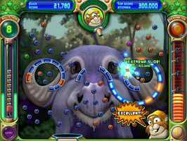

Peggle deluxe was the first game in the peggle franchise, made by Popcap games and released in the year 2007. In a similar style to Popcap's previous games like Zuma and Bejeweled, Peggle is a basic and colorful game based on the game pachinko. There are 55 main levels in the game, and each level includes 4 different type of pegs, either blue, green, purple and orange. You beat a level by clearing all orange pegs on the board, which may require clearing blue pegs that get in the way of orange pegs.
Peggle is the best game/game franchise ever produced, and sadly it's legacy has been tarnished due to the release of Peggle 2, a game that ruined Peggle's name caused by EA's aqcuisition of Popcap Games. Peggle is one of the most addicting games to ever be made, it has very addicting gameplay emphasized by the sound design that always keeps you coming back, even if you have hundreds of hours in the game. Peggle has amazing replay value due to the many achievments you can get in the game. You can just go through the adventure mode, or also do the extra challenge levels. You can also go for something called Extreme Grand Master, where you full clear every adventure mode, and challenge level. Peggle also has a fairly active speedrunning community, where you can interact with and befriend other Peggle enthusiasts.
| Game Name | Platform | Release Year |
|---|---|---|
| Peggle: Dual Shot | Nintendo DS | 2009 |
| Peggle 2 | Playstation 4, Xbox One, Xbox Cloud, Xbox 360 | 2013 |
| Peggle Blast | Mobile, Web Browser | 2014 |